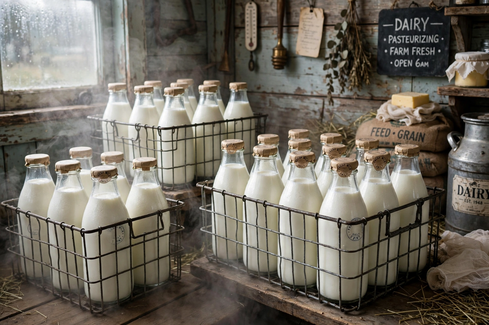

Pasteurization
From Wikipedia, the free encyclopedia

Pasteurization is the partial sterilisation of a food or drink by controlled heating — enough to kill the microbes that cause disease and early spoilage, while sparing flavour as far as possible. It is named for Louis Pasteur, whose studies of wine and beer in the 1860s showed that gentle heating (he used roughly 55–60 °C) stopped unwanted fermentation; the work was commissioned in the interests of France's wine industry. Applied to milk from the late 19th century — championed by campaigners like New York's Nathan Straus, whose pasteurised-milk depots cut infant deaths — it became one of public health's foundational technologies, largely ending milk-borne tuberculosis, brucellosis, typhoid and diphtheria where it was adopted.
Methods
Modern milk pasteurization takes standard forms: batch (vat) pasteurization at 63 °C for 30 minutes; high-temperature short-time (HTST, "flash") at about 71.7 °C for 15 seconds, the industry default; and ultra-high temperature (UHT) at around 135 °C for a few seconds, which yields shelf-stable milk at some cost in flavour. The legal time-temperature standards were set against the hardiest target pathogen, Coxiella burnetii (the agent of Q fever). Pasteurization is not sterilisation: pasteurised milk still spoils and must be refrigerated, though more slowly and safely.
Debates
The process transformed urban milk from a notorious killer into a safe staple — Chicago's 1908 ordinance was the first big-city mandate — and is still contested: raw-milk advocates argue flavour and nutrition are sacrificed and risks overstated, while health authorities point to outbreak data in which unpasteurised dairy features far beyond its market share. The same gentle heat guards juices (after 1990s E. coli outbreaks), eggs in shell and in liquid, beer, wine and almonds. Pasteur's name attaches to food's broader lesson: most of what keeps us safe is invisible, thermal and unglamorous.